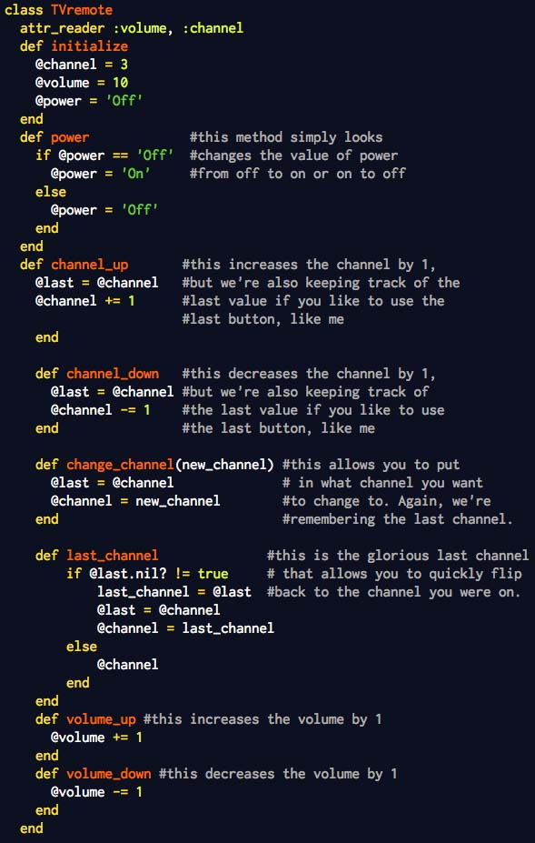
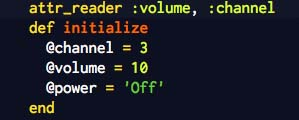
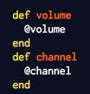
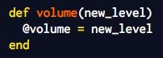

Ross Reckons


Hey everyone! Today I want to talk to you about classes in Ruby and how they're used. To do this, I'm going to give you an example by making one of my favorite things a class: the television remote. Here it is in all of its glory:

I'll start from the beginning witht he "class TVremote" portion. You'll notice that I start with "class" which is what is used to define a new class. I've defined a lot of methods in the class and close the class with "end" at the bottom, like I would a method. Classes start with capital letters, so if you're glancing over some code, you can quickly tell when someone is referring to a class. To give you some context here, Arrays and Hashes (remember those?) are also classes. They come with Ruby when you install it, and there are certain methods that come with them as well. You'll notice that below my TVremote class, I define new methods in that class. These methods can only be used on objects that are created in the TVremote class. They won't work for Arrays or Hashes for example, because they only exist within the TVremote class.
Ok, if we move down just a little bit, we'll see this chunk of code:

I'll start with the "def initialize" peice. Here, I'm defining what happens when I created an object with the TVremote class. I'm setting the channel to 3, volume to 10 and power to off. You'll notice that these three variable are a little different than normal variable because they have '@' in front of them. This means that they are instance variables, hence they can be used with any method in that class. To me, these are key values within the class that a lot of my methods will interact with. If you glance over my class, you'll notice that I use at least one of these instance variable in all of my classes.
Just above the "def initialize" you'll see "attr_reader :volume, :channel". Attr stands for attribute is gives us a quick way to look up what the values of my instnace variables are. This would be the same as if I created two methods like this:

There are two other attributes - "attr_writer" and "attr_accessor". Attr_writer would be used if I wanted to change the value of one of my instance variables. It would be the same as if I wrote a method like this:

The "attr_accessor" is a combination of the reader and writer. Because it's useful to see/adjust the values set to your instance variables, these attributes were created to give coders a quick and easy way to be able to do just that.
Now take a little time to review the methods and the comment that goes with them. They are all pretty simple methods. The power method simply changes the value for @power from 'On' to 'Off' and vice-versa. The channel up, channel down, volume up, and volume down change the value by 1 for @channel and @volume respectively. You'll notice that with all of the channel methods, I'm keeping track of what the last value was as we change the channel. This allowed me to make the "last_channel" method which is essentially the same as the last/prev channel button on the remote. If if you've changed channels with your remote, then the last_channel method will change to the previous channel, if there is no previous channel, it will stay on the same channel.
I hope this was a fun look at classes (and tv remotes), and as always let me know what you think by using those links up top!
Archive